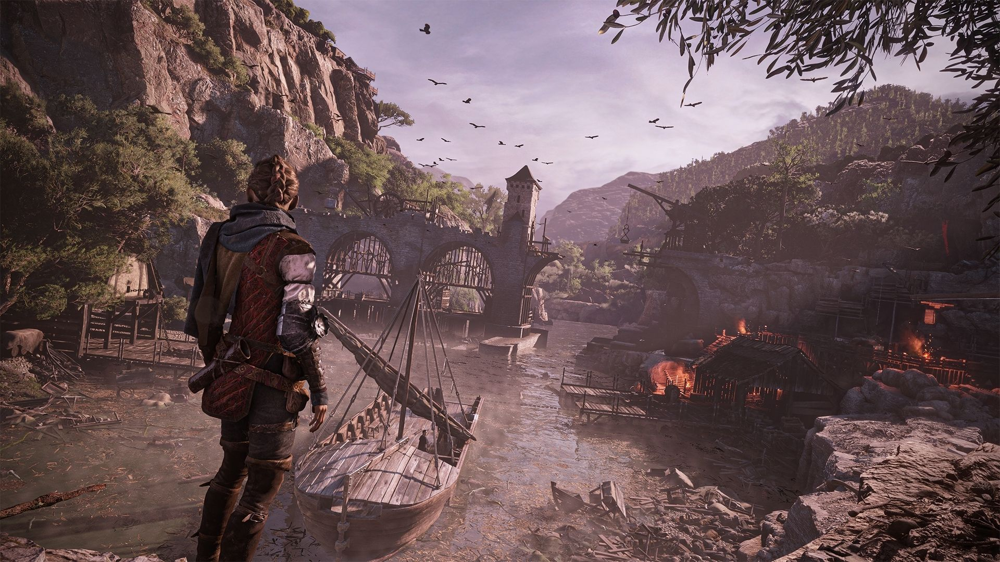

A Plague Tale: Innocence offre une plongée captivante dans un univers médiéval déchiré par la peste et la cruauté de l'inquisition.
L'histoire suit les pas d'Amicia,
une jeune adolescente,
et de son petit frère Hugo,
confrontés à un monde en proie au chaos au 14ᵉ siècle en France.
Le jeu dépeint de manière saisissante la France médiévale,
plongée dans une épidémie dévastatrice de peste.
Les rues sont hantées par des essaims de rats affamés,
créant une atmosphère d'horreur et de désespoir.
Ce contexte historique tumultueux sert de toile de fond à une aventure poignante et périlleuse.
Amicia et Hugo,
les protagonistes,
se voient contraints de fuir l'inquisition qui les traque.
Cette fuite désespérée les entraîne à travers des paysages inhospitaliers et des environnements dangereux.
La lutte pour la survie devient le fil conducteur de l'histoire,
créant une tension constante qui pousse les joueurs à naviguer avec prudence à travers les ombres menaçantes de ce monde déchu.
Au-delà de l'aspect survivaliste,
A Plague Tale explore des thèmes plus profonds tels que la famille et l'amitié.
Le lien entre Amicia et Hugo est au cœur de l'expérience,
évoluant au fil des épreuves qu'ils affrontent ensemble.
Les joueurs sont témoins de la maturation d'Amicia alors qu'elle prend sur elle la responsabilité de protéger son jeune frère dans ce monde hostile.
L'atmosphère sombre et immersive est un élément essentiel du jeu.
Les décors délabrés,
les éclairages subtils et les détails visuels contribuent à créer une ambiance oppressante,
accentuée par le grondement constant des rats.
Chaque coin obscur réserve des dangers,
et chaque moment est teinté d'une tension palpable qui pèse sur les épaules des joueurs.
En somme,
A Plague Tale: Innocence offre une expérience narrative puissante et émotionnelle.
Les joueurs sont entraînés dans un récit épique,
confrontés à des choix difficiles et immergés dans un monde où la survie et la résilience s'entremêlent.
C'est une aventure qui va bien au-delà du simple jeu,
laissant une empreinte durable dans l'esprit des joueurs.
A Plague Tale: Requiem (2022)
A Plague Tale: Requiem transporte les joueurs dans une suite épique,
poursuivant le périple d'Amicia et Hugo dans un monde dévasté par la peste et entrelacé d'intrigues.
Ce deuxième volet promet une aventure encore plus immersive et émotionnelle,
élargissant l'univers déjà riche établi par A Plague Tale: Innocence.
Dans cette suite,
Amicia et Hugo font face à de nouveaux défis qui testent leur résilience et leur lien fraternel.
Le monde déchiré par la peste et les intrigues offre un terrain de jeu encore plus complexe et dangereux.
Les joueurs sont invités à explorer des environnements variés,
chacun portant son lot de mystères et de dangers,
créant une expérience riche en découvertes.
A Plague Tale: Requiem s'engage à approfondir l'intrigue déjà captivante de la saga.
Les énigmes complexes ajoutent des couches supplémentaires à l'histoire,
demandant aux joueurs de faire preuve de ruse et de perspicacité pour surmonter les obstacles.
La narration,
élément clé de la saga,
promet d'explorer de nouvelles dimensions émotionnelles et de plonger les joueurs dans un récit immersif où chaque choix compte.
Le développement des personnages d'Amicia et Hugo est au cœur de l'expérience.
Les joueurs peuvent s'attendre à une évolution continue des relations,
des émotions et des personnalités des protagonistes,
offrant ainsi une profondeur psychologique à l'histoire.
Les nouveaux personnages introduits apporteront également leur lot d'intrigues et de dynamiques,
contribuant à élargir l'univers complexe de la saga.
Avec A Plague Tale: Requiem,
l'esthétique visuelle et sonore qui a marqué le premier volet est amenée à de nouveaux sommets.
Les développeurs s'efforcent de créer des environnements visuellement époustouflants,
amplifiant l'atmosphère immersive qui a caractérisé la série.
La bande sonore,
élément crucial de la saga,
promet de sublimer chaque moment,
intensifiant les émotions des joueurs.
A Plague Tale: Requiem promet une expérience riche en émotions et en découvertes,
offrant aux joueurs une suite qui transcende les attentes.
Avec des environnements variés,
des énigmes complexes et une narration captivante,
ce deuxième volet de la saga s'annonce comme une épopée encore plus profonde et intense.
Les joueurs peuvent s'attendre à être plongés dans un monde de désespoir,
de courage et de liens familiaux indéfectibles,
ajoutant ainsi une nouvelle page mémorable à l'histoire d'Amicia et Hugo.
Au-Delà des Ténèbres
Ce qui définit la saga A Plague Tale réside dans son pouvoir d'immersion narrative profonde,
où chaque élément,
des personnages complexes aux paysages détaillés en passant par l'histoire émotionnelle,
contribue à tisser une trame captivante.
L'accent particulier mis sur les relations humaines au sein de circonstances extraordinaires crée une expérience unique dans le genre du jeu d'action-aventure.
Les personnages de la saga A Plague Tale sont bien plus que de simples avatars.
Ils sont des êtres complexes,
façonnés par les épreuves qu'ils traversent et les liens qui les unissent.
Amicia et Hugo,
en particulier,
évoluent au fil de l'histoire,
passant par des moments de vulnérabilité,
de courage et de croissance personnelle.
Cette richesse caractérielle permet aux joueurs de s'attacher profondément à ces figures,
créant une connexion émotionnelle puissante.
Les décors minutieusement élaborés dans A Plague Tale ajoutent une couche de réalisme saisissante.
Des rues en ruines aux paysages dévastés par la peste,
chaque environnement est un tableau immersif qui raconte sa propre histoire.
Les développeurs ont su capturer l'essence sombre et désolée du monde médiéval,
contribuant ainsi à l'atmosphère unique qui définit la saga.
L'histoire de A Plague Tale transcende le simple fil narratif.
Elle est une exploration profonde des émotions humaines face à l'adversité.
L'amour fraternel entre Amicia et Hugo,
la peur de l'inconnu,
la lutte pour la survie dans un monde en ruines,
chaque élément est imprégné d'une émotion authentique.
L'horreur qui émane de la peste et des rats dévorants est subtilement équilibrée par les moments de tendresse et de solidarité,
créant ainsi une palette émotionnelle riche et nuancée.
Au cœur de la saga,
on trouve l'exploration minutieuse des relations humaines au sein de circonstances extraordinaires.
Les moments partagés entre les personnages ne sont pas simplement des interludes,
mais des piliers fondamentaux de l'histoire.
Les interactions entre Amicia,
Hugo et d'autres protagonistes façonnent le récit,
ajoutant une dimension humaine qui va au-delà des simples mécaniques de jeu.
La saga A Plague Tale offre une expérience où l'émotion se mêle à l'horreur,
transcendant les frontières du jeu d'action-aventure.
Les personnages complexes,
les paysages saisissants et l'histoire émotionnelle tissée avec soin créent un monde où les joueurs sont invités à ressentir aussi bien qu'à jouer.
C'est cette immersion narrative profonde qui fait de la saga A Plague Tale une expérience vidéoludique exceptionnelle et mémorable.

Un Monde Déchiré
La bande sonore de A Plague Tale est bien plus qu'une simple toile de fond musicale ; elle est un élément clé qui sculpte l'expérience émotionnelle des joueurs.
Chaque note,
chaque mélodie est orchestrée avec un soin méticuleux pour accompagner de manière poignante chaque moment crucial de l'histoire.
Les compositions musicales ne se contentent pas d'occuper l'arrière-plan,
mais elles deviennent des partenaires narratifs essentiels.
Les scènes poignantes,
chargées d'émotion,
trouvent leur résonance dans les notes délicatement choisies.
Les mélodies évoquent des sentiments profonds,
qu'il s'agisse de moments de peur intense face à la menace des rats ou de moments plus tendres entre les personnages.
La bande sonore devient ainsi un canal émotionnel direct entre le jeu et le joueur.
Au-delà des compositions musicales,
les effets sonores subtils jouent un rôle crucial.
Chaque bruit,
chaque murmure contribue à l'immersion dans ce monde médiéval dévasté par la peste.
Le grondement des rats,
le souffle du vent à travers des ruelles désertes,
les craquements des structures en ruines – ces détails sonores subtils ajoutent une couche de réalisme qui transcende le simple aspect visuel du jeu.
Ils renforcent l'atmosphère sinistre et plongent les joueurs au cœur de l'action.
La véritable magie opère lorsque la bande sonore et les effets sonores fusionnent de manière harmonieuse.
Cette symbiose crée une expérience audio qui va au-delà de la simple écoute.
L'impact émotionnel du récit est renforcé par la manière dont la musique et les sons s'entrelacent,
amplifiant la tension dans les moments cruciaux et permettant aux joueurs de véritablement ressentir les nuances émotionnelles du jeu.
Cette fusion sonore a un objectif clair :
renforcer l'immersion du joueur.
En se laissant emporter par les compositions évocatrices et les effets sonores captivants,
le joueur devient partie intégrante de l'histoire.
Les sons deviennent des indices émotionnels,
guidant les réactions et les sentiments du joueur tout au long de l'aventure.
En somme,
la bande sonore de A Plague Tale n'est pas simplement un accompagnement musical,
mais une composante essentielle qui élève l'expérience de jeu à de nouveaux sommets.
Elle transcende le simple cadre sonore pour devenir un élément narratif puissant,
accentuant l'impact émotionnel du récit et renforçant l'immersion du joueur dans ce monde sombre et captivant.